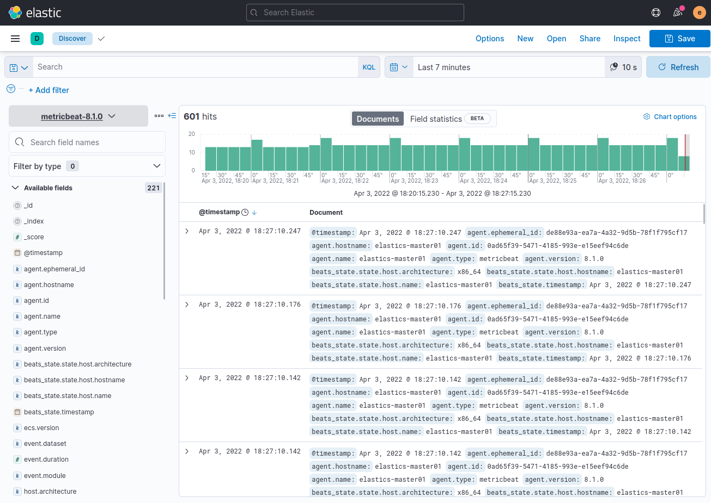

3.1.7 Integración de sistemas y aplicaciones en Elastic Stack
1. Integraciones y configuración más fáciles
La app Integrations proporciona una UI basada en la Web en Kibana para agregar y gestionar integraciones de servicios y plataformas populares. Las integraciones no solo proporcionan una forma de agregar fuentes nuevas de datos, sino que también se envían con activos listos para usar como dashboards, visualizaciones y pipelines para extraer campos estructurados de los logs. No es necesario dedicar mucho esfuerzo a configurar el sistema porque se realiza automáticamente.
Las nuevas integraciones disponibles en general permiten monitorizar la infraestructura del sistema, incluidos servidores, equipos portátiles, contenedores, máquinas virtuales y más. También se pueden proteger los sistemas ante amenazas de seguridad y analizar eventos de seguridad. Hay más de 70 integraciones disponibles, y elastic trabaja de forma continua para agregar más.
Figura . Panel de integraciones.
Si se pulsa sobre un recuadro de una integración, ejemplo, Elasticsearch Metrics, aparece una página con las instrucciones para la instalación y configuración de Elasticsearch Metrics.
Figura . Instalación y configuración de Elasticsearch Metrics.
Elasticsearch Metrics permite monitorizar la pila Elastic Stack, es decir, para recopilar métricas que se muestran en la interfaz de usuario de Stack Monitoring en Kibana.
A continuación, se describe el proceso de instalación y configuración de Metrics en el equipo Elastic Stack.
Instalación de metricbeat
Siguiendo la página de instrucciones, en primer lugar se descarga el paquete metricbeat-8.1.0-amd64.deb y luego se instala con dpkg.
root@elastics-master01:/home/administrador#curl -L -O https://artifacts.elastic.co/downloads/beats/metricbeat/metricbeat-8.1.0-amd64.deb
root@elastics-master01:/home/administrador#dpkg -i metricbeat-8.1.0-amd64.deb
Configurar metricbeat
A continuación, hay que editar el fichero metricbeat.yml para configurar kibana y la salida hacia elasticsearch. Como se puede observar en las figuras inferiores, en primer lugar hay que crear las claves con las credenciales del usuario elastic en el keystorage de metricbeat.
root@elastics-master01:/#nano /etc/metricbeat/metricbeat.yml
Habilitar módulo system
Al instalar metricbeat, el módulo system se habilita de manera automática, pero en caso que no esté habilitado, hay que habilitarlo con el comando siguiente:
root@elastics-master01:/#metricbeat modules enable system
Mediante este módulo se recogen las métricas del servidor, a saber: cpu, memoria, carga, red, etcéterfa.
Test metricbeat
A continuación, hay que ejecutar los comandos de test de metribeat para comprobar que no hay errores tanto en la salida como en el fichero de configuración:
root@elastics-master01:/#metricbeat -e test output
root@elastics-master01:/#metricbeat -e test config
Cargar dashboards Kibana
A continuación, si los test realizados han tenido éxito, hay que ejecutar el comando de carga de los paneles para kibana. De forma predeterminada, el comando importa los dashboards del directorio kibana, que está disponible en el paquete metricbeat.
root@elastics-master01:/#metricbeat setup --dashboards
Arrancar metricbeat
Por último, se inicial Metricbeat y se habilita el inicio automático en el arranque del sistema.
root@elastics-master01:/#systemctl enable --now metricbeat
Visualizar dataview del índice Metricbeat
Por último, se crea un dataview del data strema metricbeat-8.1.0.
|  |  |
{kind=link}
También se proporciona una UI basada en la Web para configurar integraciones para los sistemas y aplicaciones. En lugar de editar archivos YAML, la UI web es más concisa y ofrece orientación y validación. Ya se proporcionan los valores predeterminados para las ubicaciones de métricas y logs comunes, de modo que simplemente se puede hacer clic en guardar para desplegar la integración con un clic.
Ejemplo - Integrar Ngins
Ngins es un servidor web con capacidad de actuar como proxy inverso. A diferencia de Apache, es muy ligero puesto que consigue reducir la cantidad de memoria empleada a través de crear únicamente los hilos justos y necesarios para atender peticiones en un período corto de tiempo. Además, consigue un tiempo de respuesta más rápido y atender un mayor número de peticiones por segundo (principalmente para contenido estático). Al contrario que Apache, Nginx no permite definir directivas de configuración mediante ficheros especiales .htaccess.
Otra ventaja de Nginx es que puede actuar como balanceador de carga, consiguiendo repartir el tráfico entrante entre varios servidores web y evitar la saturación de los mismos. Además, ejerciendo como proxy inverso permite mejorar la seguridad porque consigue ocultar la existencia o características del servidor origen (inaccesible desde internet), reducir la carga de éste cacheando el contenido o actuar como único punto de autenticación.
Nginx se podría emplear como proxy inverso hacia la herramienta de visualización de datos Kibana.
Si se desea integrar Ngins, simplemente hay que indicar el nombre y una descripción opcional, en qué namepace se ubica y por último el agent policy name (un solo agente o en un grupo de agentes). Si se pulsa sobre Advanced options en el pie de la página, se pueden establecer más parámetros.
Se puede optar por agregar esta integración Nginx en un solo agente o en un grupo de agentes como parte de una política. Una política de agente permite aplicar la misma integración en cualquier cantidad de agentes, lo que simplifica la gestión de varios agentes a escala. Estos agentes recibirán la actualización la próxima vez que se contacten con Fleet.
2. Gestionar Fleet de manera centralizada
Fleet funciona como el plano de control que permite gestionar de forma centralizada grandes grupos de agentes. Se puede consultar el estado de todos los agentes en la página de Fleet. Aquí se puede comprobar cuáles agentes están en línea y en buen estado, cuáles tienen problemas y la última vez que se contactaron. También se puede ver la versión del binario de agente y la política de agentes.
A continuación, se describen los pasos para configurar el servidor fleet.
Paso 1
En primer lugar hay que acceder a la url http://192.168.0.254:5601/app/fleet/agents. En el primer punto se puede crear un nueva política para los agentes a integrar o utilizar la que existe por defecto. Para este caso se crea una nueva a la que se llama como 'Fleet Server policy Ciber-local'. A continuación, hay que pulsar el botón 'Create policy' para que se cree. El sistema informa si se ha creado correctamente con el mensaje .
Paso 2
En el segundo punto, hay que descargar el agente de elastic para instalarlo sobre el equipo donde residirá el servidor fleet que para este caso, es el mismo equipo. En primer lugar hay que pulsar en el enlace 'Go to download page' para acceder a la página de descarga. Si se observa en la figura de la derecha (página de descarga), el sistema ofrece la posibilidad de descargar el agente para diferentes sistemas operativos, para nuesto caso, hay que copiar el enlace DEB 64-BIT y que corresponde a la url https://artifacts.elastic.co/downloads/beats/elastic-agent/elastic-agent-8.1.0-amd64.deb.
El proceso es el siguiente, una vez se ha copiado el enlace de descargar, hay que descargar el fichero deb y luego instalarlo con dpkg.
root@elastics-master01:/home/administrador#curl -L -O https://artifacts.elastic.co/downloads/beats/elastic-agent/elastic-agent-8.1.0-amd64.deb
root@elastics-master01:/home/administrador#dpkg -i elastic-agent-8.1.0-amd64.deb
Paso 3
El siguiente paso es elegir el modo de implementación para la seguridad. Para nuestro caso, se elige 'Quick start' por tratarse de un ejemplo, pero para sistemas en producción, habría que elegir 'Production'.
Paso 4
En el siguiente paso, hay que establecer la url que usarán los agentes de elastic para conectarse con el servidor Fleet. Para este caso, la url es: https://192.168.0.254:8220.
Paso 5
Ahora, hay que generar un token de servicio para otorgar permisos de Fleet Server para escribir en Elasticsearch. Para ello, hay que pulsar sobre 'Generate service token' y el sistema devuelve el token generado que hay que guardar (figura derecha).
El token generado es:
AAEAAWVsYXN0aWMvZmxlZXQtc2VydmVyL3Rva2VuLTE2NDkxNTEwNTA5NTY6QWJHTUM0cUNUd2E0UmlWbW9XTzJBdw
Paso 6
A continuación, hay que iniciar el servidor Fleet, para ello, hay que pulsar en la pestaña RPM/DEB y copiar el código que ha generado para ejecutarlo en el equipo.
Paso 7
Por último, hay que ejecutar el comando para iniciar el servidor Fleet.
root@elastics-master01:/#elastic-agent enroll \
--fleet-server-es=https://192.168.0.254:9200 \
--fleet-server-service-token=AAEAAWVsYXN0aWMvZmxlZXQtc2VydmVyL3Rva2VuLTE2NDkxNTEwNTA5NTY6QWJHTUM0cUNUd2E0UmlWbW9XTzJBdw \
--fleet-server-policy=fleet-server-policy \
--fleet-server-es-ca-trusted-fingerprint=6b31631457bb60e6ffaa0dfa311a5a62c6190cd8a5ffbd2a9b8bdb01b154b4f3 \
--fleet-server-insecure-http
Paso 8
Si se accede a Fleet --> Settings, se puede observar que ya se tiene disponible el servidor de fleet y los agentes que están enviando datos (output).
3. Integración de hosts
En el siguiente enlace, se tiene el proceso para añadir agentes (hosts) al servidor de fleet.
Para el caso de añadir un agente Windows, hay que descargar el zip de instalación y a continuación descomprimirlo para que editar el fichero elastic-agent.yml y poder configurar los datos del servidor fleet.
Una vez configurado, se ejecuta en la consola el binario elastic-agent.exe.
Obra publicada con Licencia Creative Commons Reconocimiento No comercial Compartir igual 4.0